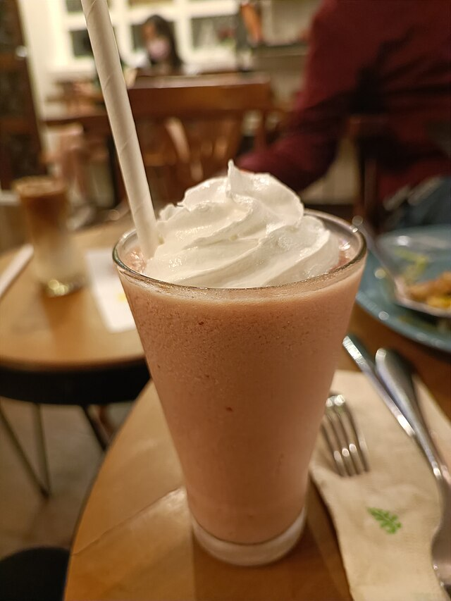

Directions
- Combine frozen strawberries, milk, banana, and strawberry jam in a blender. Pulse to break up the fruit, then blend on high until completely smooth (about 1 minute). Pour and serve.
Recipe by Genevieve Yam at Serious Eats . Used here for academic purposes.
